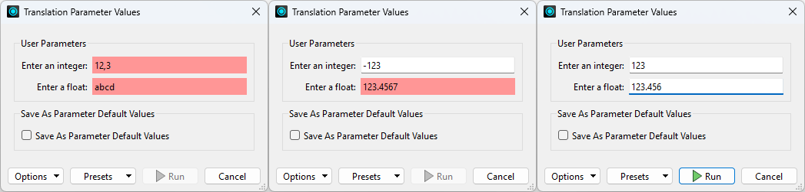
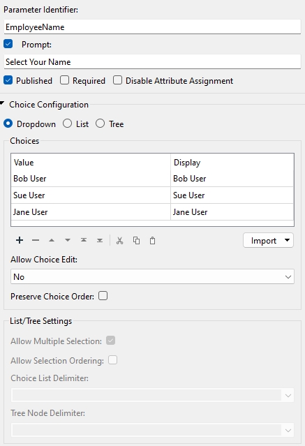
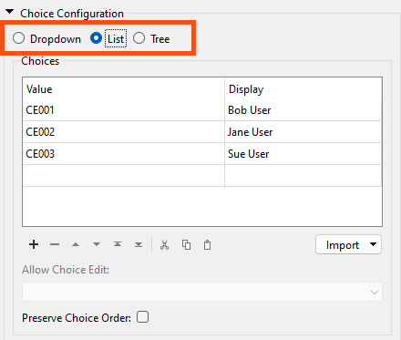

After completing this lesson, you’ll be able to:
There are many different types of user parameters and many different ways to make use of them. The most common parameter types can be grouped as:
Text parameters are a simple way to accept plain text values into a workspace. A Text parameter allows a single line of text, while Text (Multiline) parameters allow the user to enter text broken over several lines.
The Text parameter provides an option to Trim Whitespace. When enabled, the parameter will remove any leading or trailing white space. To remove other unwanted elements, such as commas or other standard delimiters, use a StringReplacer or similar transformer to edit the value supplied by the user parameter before using it in the workspace.
There is no limitation on the characters that can be entered. However, Text (Multiline) is better for large amounts of text spanning several lines. Text (Multiline) is also the preferred parameter for entering encoded (not plain ASCII) characters.
Not every transformer and format in FME handles FME-encoded text as provided through the 'Text (Multiline) parameter. If you are unsure, then it’s safer to use a Text parameter – that everything will support – rather than a Text (Multiline) parameter that is not universally supported.
Unlike text, there is just one type of numeric parameter: Number. However, this parameter type has settings that allow you to define whether it is a float or integer-type number.
Here, for example, the workspace author is creating an integer parameter. They set the Numeric Precision to Integer.

The user cannot enter a floating point (non-integer) number when prompted for a value. Because this is a number field, FME also stops the user from entering text (alphabetic) characters.
This is an excellent example of how FME parses input to ensure it matches the parameter type, as shown in the following screenshots:

The Upper/Lower Limit settings for a numeric parameter also allow FME to parse the input to ensure it matches what is required:

A Choice parameter presents the user with a fixed list of options. Different choice type parameters allow the user to pick from a list, pick multiple entries from a list, or type in text as an alternative to a list:

Here, the user will be asked to enter their name. However, since the names of all users are already known – presumably, this is for a particular company’s staff – a list of them is created:

That way, the user is prompted to select their name from a list. They don’t have to type it in manually:

Notice that the Choices table has both a Value and Display column. This section is a lookup table that maps the chosen entry to a value provided to FME.
For example, this workspace matches incoming features to a database using an EmployeeID.

The end user provides EmployeeID, but they can’t always remember their ID number. So, the author creates a Choice user parameter but uses different values for the Value and Display columns.
The parameter is configured like so:

When a user selects their name from the list, the value provided to the workspace is their employee ID. That way, the employee ID can be used as a match in the DatabaseJoiner without the end-user remembering it!
If you would like the end-user to be able to select multiple values, choose the List or Tree options under Choice Configuration.

These let the end user select multiple values by default. For example, if a manager wanted to run reports on several employees, they could use this. Multiple values are returned space-delimited by default, but you can change the delimiter using the Choice List and Tree Node Delimiter parameters.
Suppose you'd like to offer a selection of reader formats, writer formats, or coordinate systems for the user to choose from. In that case, we recommend using the Import button on the Choice parameter. This lets you choose the ones you want and automatically fills in the FME-required string under Value and a human-readable label under Display. It's much better than doing it yourself!